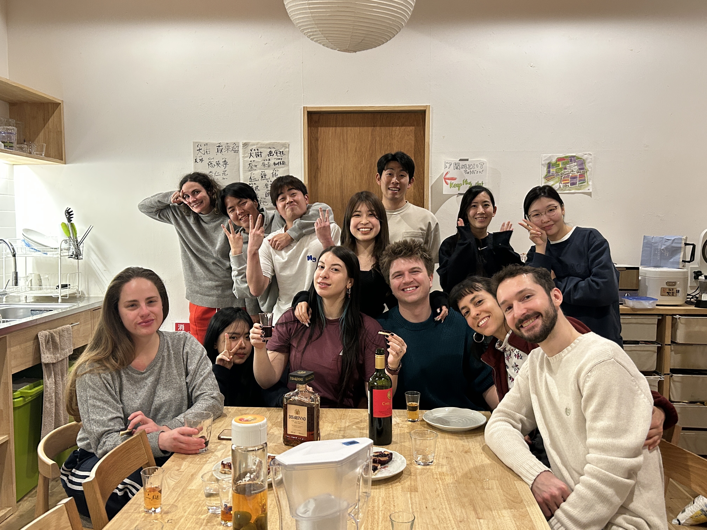
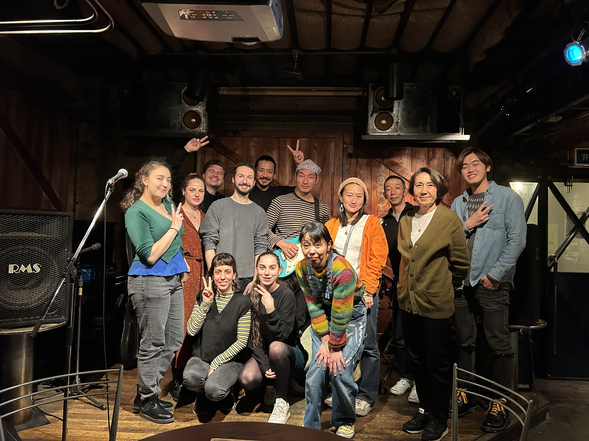
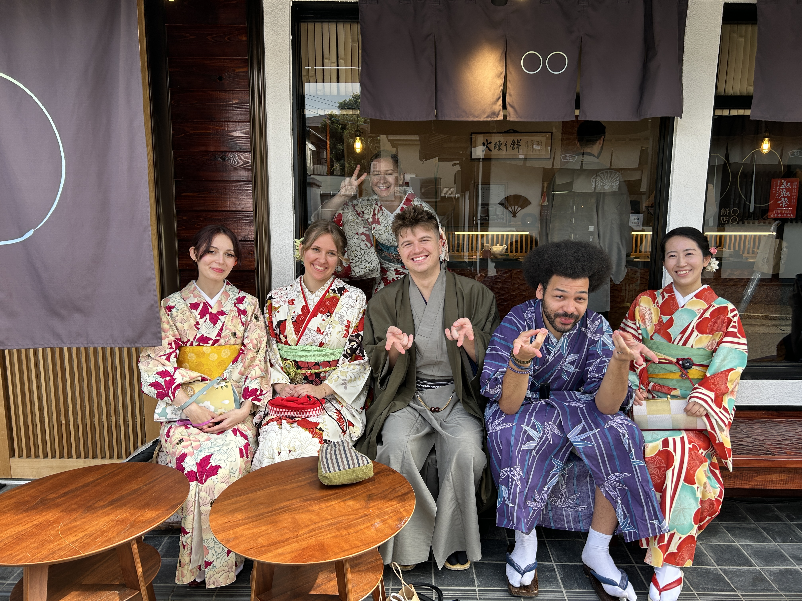

I grew up on a small island in the Puget Sound called Bainbridge Island.
It's just a boat ride away from Seattle.
I spent most of my teens and early twenties in hospitals and
institutions due to a traumatic brain injury. Thankfully, at 25 I found
a specialist who was able to help me get through it. From then on, I've
been doing my best to experience all the things I missed out on.



Japan
After things settled down and I got my bearings, I packed my things
and moved to Japan. I joined a school in Kyoto, moved into a
sharehouse and ended up meeting my wife. We lived in Japan together
until her resonsibilities caught up to her and we had to move back for
her to continue on her career path to becoming a teacher.
Italy
After getting married, my wife and I moved back to Italy, to a small
town called Marino, just outside of Rome. I had fun exploring the
country and meeting new people for the first few months, but after a
while I realized that I should probably start acting a bit more like
an adult and venture into a career that I could enjoy.
Goals for the Future
I found that the thing that I enjoyed the most was programming. I
initially started with C, working through the C Programming: A Modern
Approach textbook by K. N. King before moving onto JavaScript. I then
worked through the JavaScript: The Definitive Guide by Flanagan in
preperation for the Fullstack Academy Full-Time course. I don't know if
I want to become a web dev, but I know that I love programming and hope
to find a career in it once I feel confident in my abilities and feel
near fluent in at least one language so that I can have the transferable
skills to learn new languages and to explore different paths in the
field.